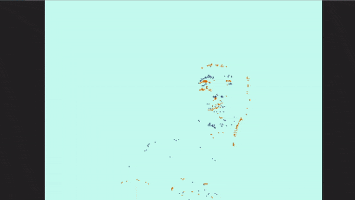

- Arş. Gör. Aykut Görkem GELEN
- E-posta:
aykut.gelen [at] erzincan.edu.tr - Ofis:
Erzincan Binali Yıldırım Üniv.
Mühendislik-Mimarlık Fakültesi
Elektrik-Elektronik Müh.
C1-239 - Güncellenme @ 28/07

Aykut Görkem Gelen
Dinamik Görüntü Sensörü (DVXplorer)
Erzincan, 2021
Güncel Uğraş / İlgi
- Dinamik Görüntü Sensörü
- Eş Zamanlı Konumlandırma ve Haritalandırma
- Spiking Sinir Ağları
- Nöromorfik İşlemciler (Spinnaker, Loihi)